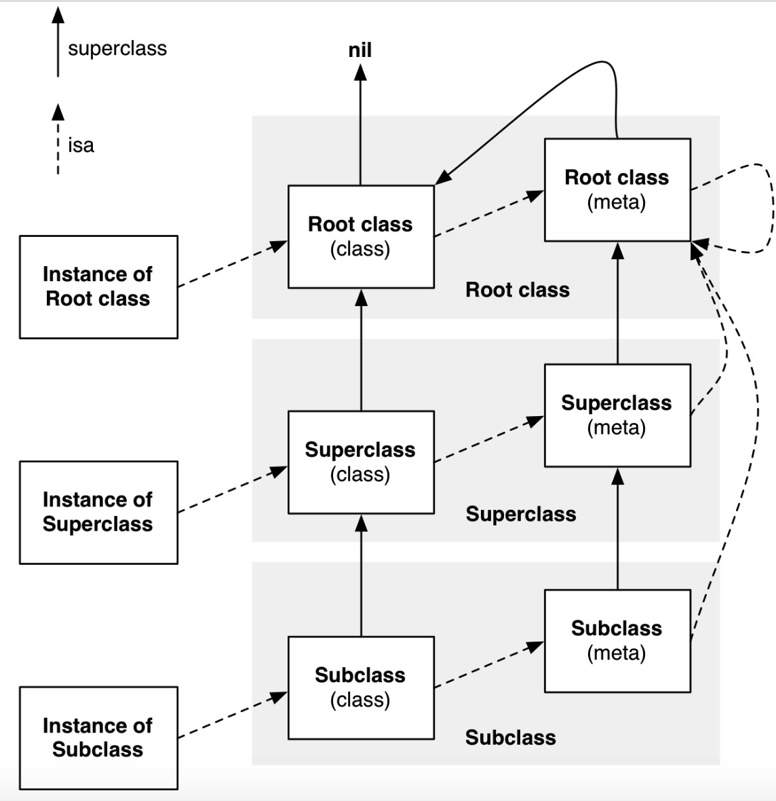
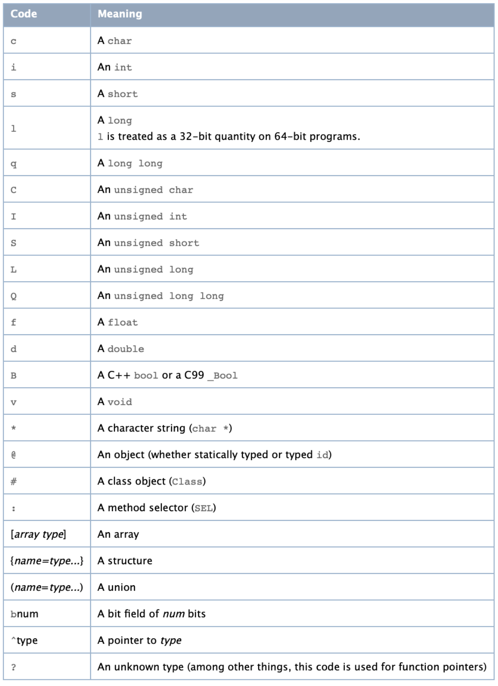

1. 对象、类对象、元类 1.1 isa指向、superClass指向 1 2 3 4 5 6 7 8 9 10 11 12 13 14 15 16 17 18 19 20 21 22 23 24 25 26 27 28 29 30 31 32 33 34 /** //先把这里的协议注释掉，用到的时候再打开 @protocol PersonProtocol <NSObject> @property (nonatomic, copy) NSString *p_address; - (void)p_func1; + (void)p_func1; @end */ @interface Person : NSObject { NSString *_hobby; CGFloat _height; } @property (nonatomic, copy) NSString *name; @property (nonatomic) int age; - (void)func1; - (void)func2; + (void)func3; + (void)func4; @end @interface Teacher : Person @end // 然后执行，直接打断点。 Person *p = [[Person alloc] init]; Teacher *t = [[Teacher alloc] init];
我们根据述代码进行分析，isa指针的指向。
注意，这里是用的是模拟器
1.2 实例对象的isa 首先我们先看Person的实例p的isa指向情况
1 2 3 4 5 6 7 8 9 10 // 首先打印一下p的内存情况 (lldb) po p <Person: 0x1006460b0> // 输出p指针的情况 (lldb) x/4gx p 0x1006460b0: 0x011d8001000083f9 0x0000000000000000 0x1006460c0: 0x0000000000000000 0x0000000000000000 (lldb) p p 0x011d8001000083f9 (long) $6 = 1791002988741
这里拿到p指针指向的内存情况，我们知道第一块内存区域存放的是isa指针，直接打印的话，发现就是一串数字，啥也看不出来。还记得上一章中object_getClass反向验证isa指向最后的”&”运算吗？0x011d8001000083f9这个值就是isa->bits，我们用它与ISA_MASK进行&运算。因为这里是用的真机，所以ISA_MASK = 0x00007ffffffffff8，如果是用Mac或者模拟器，根据芯片类型判断是否是ARM64架构还是x86，然后使用对应的值进行换算。
1 2 3 4 5 6 7 // p/x输出内存的16进制 (lldb) p/x 0x011d8001000083f9 & 0x00007ffffffffff8 (long) $2 = 0x00000001000083f8 // 这里po就是Person类 (lldb) po 0x00000001000083f8 Person
打印出来是Person。所以isa指向的就是Person类。那我们做一下验证，直接通过object_getClass方法来找一下Person这个类。
1 2 (lldb) p/x object_getClass(p) (Class) $12 = 0x00000001000083f8 Person
是不是发现，Person类的内存地址是一样的。如果再实例化一个p1，看p1->isa指向的和p->isa指向的是否是同一个Person类的内存地址。
1 2 3 // 直接使用object_getClass获取类对象。 lldb) p/x object_getClass([Person alloc]) (Class) $26 = 0x00000001000083f8 Person
答案是肯定的，Person类在内存中只有一份，也就是说所有的类对象在内存中都只有一份。
1.3 类对象的isa 接下来，我们继续寻找Person类对象的isa指向情况。
1 2 3 4 5 6 7 8 9 10 11 (lldb) p 0x000001a10018d0c5 (long) $6 = 1791002988741 (lldb) x/4gx 0x00000001000083f8 0x1000083f8: 0x00000001000083d0 0x000000010036a140 0x100008408: 0x0000000100645d60 0x0001803000000003 (lldb) p/x 0x00000001000083d0 & 0x00007ffffffffff8 (long) $4 = 0x00000001000083d0 (lldb) po 0x00000001000083d0 Person
发现Person类对象的isa指向的还是Person，但是这个Person所在的内存地址与Person类对象不一样。
这里就出现了元类的概念（Meta Class）。
1.4 元类的isa 我们继续寻找元类的isa
1 2 3 4 5 6 7 8 9 10 11 12 13 14 // 0x00000001000083d0是Person元类所在的内存 (lldb) x/4gx 0x00000001000083d0 0x1000083d0: 0x000000010036a0f0 0x000000010036a0f0 0x1000083e0: 0x0000000100714d10 0x0002e03100000003 (lldb) p/x 0x000000010036a0f0 & 0x00007ffffffffff8 (long) $9 = 0x000000010036a0f0 (lldb) po 0x000000010036a0f0 NSObject // 拿到NSObject的地址继续x/4gx (lldb) x/4gx 0x000000010036a0f0 0x10036a0f0: 0x000000010036a0f0 0x000000010036a140 0x10036a100: 0x00000001007877b0 0x0003e03100000007
使用相同的方法找到元类的isa指向的是NSObject，这个NSObject是类对象吗？
对NSObject继续x/4gx发现isa锁指向的内存地址是一样的。
我们通过object_getClass([[NSObject alloc] init])来看看NSObject类对象的内存
1 2 3 4 5 6 7 8 9 10 11 12 13 // 获取NSObject类的地址，与p/x NSObject.class效果一致 (lldb) p/x object_getClass([NSObject alloc]) (Class) $13 = 0x000000010036a140 NSObject (lldb) x/4gx 0x000000010036a140 0x10036a140: 0x000000010036a0f0 0x0000000000000000 0x10036a150: 0x0000000100786740 0x0002801000000003 // 从这里开始，就已经跟上面的内存地址重复了 (lldb) p/x 0x000000010036a0f0 & 0x00007ffffffffff8 (long) $14 = 0x000000010036a0f0 (lldb) po 0x000000010036a0f0 NSObject
到这里，是不是看明白了点啥？NSObject类对象也有指向NSObject的元类，Person的元类的isa指向的是NSObject的元类。
1.5 使用相同的办法查看Teacher的isa 1 2 3 4 5 6 7 8 9 10 11 12 13 14 15 16 17 18 19 20 // 这里使用简单的方式，直接使用Teacher类 (lldb) x/4gx Teacher.class 0x100008380: 0x00000001000083a8 0x00000001000083f8 0x100008390: 0x0000000100362370 0x0000803000000000 (lldb) p/x 0x00000001000083a8 & 0x00007ffffffffff8 (long) $18 = 0x00000001000083a8 (lldb) po 0x00000001000083a8 Teacher (lldb) x/4gx 0x00000001000083a8 0x1000083a8: 0x000000010036a0f0 0x00000001000083d0 0x1000083b8: 0x0000000101138140 0x0001e03100000003 (lldb) p/x 0x000000010036a0f0 & 0x00007ffffffffff8 (long) $20 = 0x000000010036a0f0 // 这里又指向了NSObject (lldb) po 0x000000010036a0f0 NSObject
看到这里应该发现了点东西吧。实例对象的isa->类对象的isa->NSObject的isa，中间类对象与继承没有一丢丢关系。
1.6 类的继承链 上面我们查看了isa的走向，接下来看一下继承链。首先看一下类的继承关系。
1 2 3 4 5 6 7 8 void testSuperClass(void){ Teacher *t = [Teacher alloc]; Person *p = [Person alloc]; NSLog(@"%@",class_getSuperclass(Teacher.class)); NSLog(@"%@",class_getSuperclass(Person.class)); NSLog(@"%@",class_getSuperclass(NSObject.class)); }
这里输出一下对应类的superclass：
从打印出来的信息可以看到:
Teacher -> superclass = Person
Person -> superClass = NSObject
NSObject -> superClass = null
1.7 元类的继承链 1 2 3 4 5 6 7 8 9 10 11 12 13 14 15 16 17 18 19 20 21 22 23 24 25 26 27 28 29 30 31 32 33 void testNSObject(void) { // NSObject实例对象 NSObject *object1 = [NSObject alloc]; // NSObject类 Class cls = object_getClass(object1); // NSObject元类 Class metaClass = object_getClass(cls); // NSObject根元类 Class rootMetaClass = object_getClass(metaClass); // NSObject根根元类 Class rootRootMetaClass = object_getClass(rootMetaClass); NSLog(@"\n%p 实例对象\n%p 类\n%p 元类\n%p 根元类\n%p 根根元类",object1,cls,metaClass,rootMetaClass,rootRootMetaClass); // Person元类 Class pMetaClass = object_getClass(Person.class); Class psuperClass = class_getSuperclass(pMetaClass); NSLog(@"%@ - %p",pMetaClass,pMetaClass); NSLog(@"%@ - %p",psuperClass,psuperClass); // Teacher -> Person -> NSObject // 元类也有一条继承链 Class tMetaClass = object_getClass(Teacher.class); Class tsuperClass = class_getSuperclass(tMetaClass); NSLog(@"%@ - %p",tMetaClass,tMetaClass); NSLog(@"%@ - %p",tsuperClass,tsuperClass); // NSObject 根类特殊情况 Class nsuperClass = class_getSuperclass(NSObject.class); NSLog(@"%@ - %p",nsuperClass,nsuperClass); // 根元类 -> NSObject Class rnsuperClass = class_getSuperclass(metaClass); NSLog(@"%@ - %p",rnsuperClass,rnsuperClass); }
接下来看一下输出结果：
首先输出的NSObject的isa走位。NSObject实例对象 -> 类 -> 元类
1 2 3 4 5 0x10124ba40 实例对象 0x10036a140 类 0x10036a0f0 元类 0x10036a0f0 根元类 0x10036a0f0 根根元类
从这里的输出结果可以进一步判断出NSObject类对象的元类指向它自己。
Person类对象的元类 -> super
1 2 3 4 // Person类对象的元类 Person - 0x100008498 // Person类对象的元类 -> super NSObject - 0x10036a0f0
从地址的打印信息可以看出来，person类的元类的super指向的是NSObject类的元类。
Teacher元类
1 2 3 4 // Teacher类对象的元类 Teacher - 0x100008470 // Teacher类对象的元类 -> super Person - 0x100008498
从这里可以看出来，Teacher元类的super指向的Person的元类，地址信息都是相同的。
从上面的流程可以看到，类的继承关系和对应元类的继承关系是相对应的。可以用一张图完美的诠释isa的走向和super的指向。
总结 
每个实例对象的isa指针指向与之对应的类对象(Class)。
每个类对象(Class)都有一个isa指针指向一个唯一的元类(Meta Class)。
每一个元类(Meta Class)的isa指针都指向最上层的元类(Meta Class)（图中的NSObject的Meta Class）。最上层的元类(Meta Class)的isa指针指向自己，形成一个回路。
每一个元类(Meta Class)的Super Class指向它原本Class的Super Class的Meta Class。最上层的Meta Class的Super Class指向NSObject Class本身。
最上层的NSObject Class的Super Class指向nil。
只有Class才有继承关系，实例对象与实例对象不存在继承关系。
每一个类对象(Class)在内存中都只有一份。
2. 通过源码分析 接下来我们从objc的源码上分析这些都是什么东西。
2.1 实例对象 id（Instance） 1 2 /// A pointer to an instance of a class. typedef struct objc_object *id;
id 这个struct的定义本身就带了 个 ＊, 所以我们在使用其他NSObject类型的实例时需要在前加上 ＊, 使 id 时却不用 。
什么是objc_object?
1 2 3 4 /// Represents an instance of a class. struct objc_object { Class isa OBJC_ISA_AVAILABILITY; };
这个时候我们知道Objective-C中的object在最后会被转换成C的结构体, 在这个struct中有 个 isa 指针,指向它的类别 Class。
2.2 类对象 Class 1 2 /// An opaque type that represents an Objective-C class. typedef struct objc_class *Class;
Class的本质就是一个objc_class的结构体。
1 2 3 4 5 6 7 8 9 10 11 12 13 14 15 16 17 18 19 20 21 22 23 24 25 26 27 28 29 30 // 注意，这个源码是被简化之后的。 struct objc_class : objc_object { // Class ISA; Class superclass; cache_t cache; // formerly cache pointer and vtable class_data_bits_t bits; // class_rw_t * plus custom rr/alloc flags Class getSuperclass() const { return superclass; } void setSuperclass(Class newSuperclass) { superclass = newSuperclass; } // 用这个是无法获取rw_t，只能通过内存偏移获取bits，然后再获取rw_t class_rw_t *data() const { return bits.data(); } void setData(class_rw_t *newData) { bits.setData(newData); } bool isRootClass() { return getSuperclass() == nil; } bool isRootMetaclass() { return ISA() == (Class)this; } }
看到这个结构体，大家可能会觉得不对，这个源码是错的，不是我们经常看到的，里头没有那些我们常说的变量，methodLists、ivars等等。
1 2 3 4 5 6 7 struct objc_class { ... struct objc_ivar_list * _Nullable ivars OBJC2_UNAVAILABLE; struct objc_method_list * _Nullable * _Nullable methodLists OBJC2_UNAVAILABLE; struct objc_cache * _Nonnull cache OBJC2_UNAVAILABLE; struct objc_protocol_list * _Nullable protocols OBJC2_UNAVAILABLE; } OBJC2_UNAVAILABLE
里头确实有ivars、methodLists等，但是这个是OBJC2_UNAVAILABLE（我们目前使用的Objective-C的版本是2.0版本）。其内部确实有这些东西的，我们一步步去探究。
继续回到上面的结构体，发现ISA变量被注释掉了，其实也没有影响的，因为objc_class 继承自 objc_object（内部有isa变量）。那我们的属性、方法是存放在哪了呢？
通过查看源码，我们看到有这么一个属性class_data_bits_t bits;，这个东西里可能存放着我们需要的东西。稍后我们做验证。
OC中一切皆为对象
3 验证属性、方法、协议存在的位置 3.1 验证之前的准备 - 源码 在2.2小结我们说了属性、方法、等可能存在于class_data_bits_t这个结构体内部，我们查看它的源码：
3.1.1 class_data_bits_t 1 2 3 4 5 6 7 8 9 10 11 12 13 14 15 16 17 18 19 20 21 22 23 24 25 26 27 struct class_data_bits_t { friend objc_class; // Values are the FAST_ flags above. uintptr_t bits; public: class_rw_t* data() const { return (class_rw_t *)(bits & FAST_DATA_MASK); } ... const class_ro_t *safe_ro() const { class_rw_t *maybe_rw = data(); if (maybe_rw->flags & RW_REALIZED) { // maybe_rw is rw return maybe_rw->ro(); } else { // maybe_rw is actually ro return (class_ro_t *)maybe_rw; } } ... };
在public的方法中有class_rw_t* data()这个方法，我们进一步探索：
3.1.2 class_rw_t 1 2 3 4 5 6 7 8 9 10 11 12 13 14 15 16 17 18 19 20 21 22 23 24 25 26 27 28 29 30 31 32 33 34 35 36 37 38 39 40 struct class_rw_t { // Be warned that Symbolication knows the layout of this structure. uint32_t flags; uint16_t witness; #if SUPPORT_INDEXED_ISA uint16_t index; #endif explicit_atomic<uintptr_t> ro_or_rw_ext; Class firstSubclass; Class nextSiblingClass; const method_array_t methods() const { auto v = get_ro_or_rwe(); if (v.is<class_rw_ext_t *>()) { return v.get<class_rw_ext_t *>(&ro_or_rw_ext)->methods; } else { return method_array_t{v.get<const class_ro_t *>(&ro_or_rw_ext)->baseMethods()}; } } const property_array_t properties() const { auto v = get_ro_or_rwe(); if (v.is<class_rw_ext_t *>()) { return v.get<class_rw_ext_t *>(&ro_or_rw_ext)->properties; } else { return property_array_t{v.get<const class_ro_t *>(&ro_or_rw_ext)->baseProperties}; } } const protocol_array_t protocols() const { auto v = get_ro_or_rwe(); if (v.is<class_rw_ext_t *>()) { return v.get<class_rw_ext_t *>(&ro_or_rw_ext)->protocols; } else { return protocol_array_t{v.get<const class_ro_t *>(&ro_or_rw_ext)->baseProtocols}; } } }
确实如我们所说的，这里确实存在着我们想要的东西：methods()、properties()、protocols()等。
那我们该怎么获取到这些数据，来证明这些就是我们想要的东西呢？
3.1.3 内存偏移 我们知道在c语言中，一个数组，获取数组中的某个元素的值有多种方法：
1 2 int a[] = {1,2,3}; printf("index 1 = %d - %d", a[1], *(a+1));
比如上面的代码，我们可以直接输出某个元素的下标，也可以通过内存地址来偏移进行读取，同样，我们也可以采取地址偏移来获取objc_class->bits的值。
需要偏移多少呢？
第一个变量是Class，这是一个结构体，内部有一个isa指针，所以这是8个字节。
1 2 3 4 5 6 7 8 9 10 11 12 13 14 15 16 17 struct cache_t { private: explicit_atomic<uintptr_t> _bucketsAndMaybeMask; // 8 union { struct { explicit_atomic<mask_t> _maybeMask; // 4 #if __LP64__ uint16_t _flags; // 2 #endif uint16_t _occupied; // 2 }; explicit_atomic<preopt_cache_t *> _originalPreoptCache; // 8 }; ... ... };
其实这些就能算出来我们需要多少字节，我已经标好了。静态变量和方法是没有算在结构体内部的哈，而且cache_t内部有一个共用体，所以其所占用的空间一共是8，再加上_bucketsAndMaybeMask变量一共是16个字节。
1 2 3 4 Class ISA; // 8 Class superclass; // 8 cache_t cache; // 16 class_data_bits_t bits;
所以8+8+16 = 32个字节。
也就是我们获取到的objc_class的isa指针，然后偏移32个字节，也就是0x20。当然也可以直接通过lldb输出sizeOf(cache_t)来获取。
1 2 (lldb) p sizeof(cache_t) (unsigned long) $4 = 16
我们做一下验证，看看属性在哪。其实需要注意的一点是，我们要获取的是类对象，从类对象中查看我们的变量、方法和协议等，而不是从实例对象中获取，因为实例对象是已经在内存中了，比如属性已经有了具体的值了。
3.1.4 method_array_t 我们继续跟踪源码，查看method_array_t是个啥。
1 2 3 4 5 6 7 8 9 10 11 12 13 14 15 class method_array_t : public list_array_tt<method_t, method_list_t, method_list_t_authed_ptr> { typedef list_array_tt<method_t, method_list_t, method_list_t_authed_ptr> Super; public: method_array_t() : Super() { } method_array_t(method_list_t *l) : Super(l) { } const method_list_t_authed_ptr<method_list_t> *beginCategoryMethodLists() const { return beginLists(); } const method_list_t_authed_ptr<method_list_t> *endCategoryMethodLists(Class cls) const; };
我们猜测我们想要的数据是在method_list_t中，而method就是我们的每一个的方法等结构：
1 2 3 4 5 6 7 8 9 10 11 12 13 14 struct method_t { struct big { SEL name; const char *types; MethodListIMP imp; }; // 中间代码有删减 public: big &big() const { ASSERT(!isSmall()); return *(struct big *)this; } // 中间代码有删减 }
3.1.5 property_array_t 1 2 3 4 5 6 7 8 9 10 11 12 13 14 15 class property_array_t : public list_array_tt<property_t, property_list_t, RawPtr> { typedef list_array_tt<property_t, property_list_t, RawPtr> Super; public: property_array_t() : Super() { } property_array_t(property_list_t *l) : Super(l) { } }; // 同methods方法，我们看一下property_t struct property_t { const char *name; const char *attributes; };
3.1.6 protocol_array_t 1 2 3 4 5 6 7 8 9 10 11 class protocol_array_t : public list_array_tt<protocol_ref_t, protocol_list_t, RawPtr> { typedef list_array_tt<protocol_ref_t, protocol_list_t, RawPtr> Super; public: protocol_array_t() : Super() { } protocol_array_t(protocol_list_t *l) : Super(l) { } }; typedef uintptr_t protocol_ref_t; // protocol_t *, but unremapped
这三个分别对应methods()、properties()、protocols()方法，里头也一个共同点就是protocol_array_t。那我们重点看一下list_array_tt的结构。
3.1.7 list_array_tt 1 2 3 4 5 6 7 8 9 10 11 12 13 14 15 16 17 18 19 20 21 22 23 24 25 26 27 28 29 30 31 32 33 class list_array_tt { struct array_t { uint32_t count; Ptr<List> lists[0]; static size_t byteSize(uint32_t count) { return sizeof(array_t) + count*sizeof(lists[0]); } size_t byteSize() { return byteSize(count); } }; protected: // 这是一个迭代器 class iterator { const Ptr<List> *lists; const Ptr<List> *listsEnd; typename List::iterator m, mEnd; ... // 迭代器相关的方法 }; public: union { Ptr<List> list; uintptr_t arrayAndFlag; }; ... }
从list_array_tt结构体大概的可以看出来，list_array_tt只是一个list的封装。以property_array_t为例：
list_array_tt<property_t, property_list_t, RawPtr>就是一个存放了property_t类型的数组。
1 2 3 4 union { Ptr<List> list; uintptr_t arrayAndFlag; };
这个union共用体才是一个list_array_tt对外暴露的真是结构，一会我们通过lldb进行验证。
4 lldb 验证属性存放的位置 1 2 3 4 5 6 7 8 9 10 11 12 13 14 15 16 17 18 19 20 21 22 23 24 25 26 27 28 29 30 31 32 33 34 35 36 37 38 39 40 (lldb) x/6gx Person.class 0x1000083f8: 0x00000001000083d0 0x000000010036a140 0x100008408: 0x00000001006176b0 0x0001803000000003 0x100008418: 0x00000001012042e4 0x00000001000b9970 // 通过指针偏移0x20，也就是0x1000083f8+0x20，加上强制转换 (lldb) p (class_data_bits_t *)0x100008418 (class_data_bits_t *) $1 = 0x0000000100008418 // 拿到变量bits之后，通过class_data_bits_t -> data()函数获取rw_t (lldb) p $1->data() (class_rw_t *) $2 = 0x00000001012042e0 // 看一下class_rw_t都有哪些值 (lldb) p *$2 (class_rw_t) $4 = { flags = 2156396544 witness = 1 ro_or_rw_ext = { std::__1::atomic<unsigned long> = { Value = 4295000480 } } firstSubclass = Teacher nextSiblingClass = NSBinder } // 如果有Subclass，则会有firstSubclass=Teacher，如果没有子类则是nil // 我们在class_rw_t中已经查看过源码，可以通过properties()获取属性列表 (lldb) p $2->properties() (const property_array_t) $5 = { list_array_tt<property_t, property_list_t, RawPtr> = { = { list = { ptr = 0x0000000100008320 } arrayAndFlag = 4295000864 } } }
结合我们上面分析的结果，property_array_t输出的数据与上方list_array_tt内部的union共用体的结构是一直的。
1 2 3 4 5 6 7 8 9 10 11 12 13 14 // 获取属性列表 (lldb) p $5.list (const RawPtr<property_list_t>) $6 = { ptr = 0x0000000100008320 } // (lldb) p $6.ptr (property_list_t *const) $7 = 0x0000000100008320 (lldb) p *$7 (property_list_t) $8 = { entsize_list_tt<property_t, property_list_t, 0, PointerModifierNop> = (entsizeAndFlags = 16, count = 2) } // $8也就是我们的ptr内存储的列表
但是entsize_list_tt又是什么类型？我们又该通过那种方式来获取我们最后想要的property呢？
1 2 3 4 5 6 7 8 9 10 11 12 13 14 struct entsize_list_tt { uint32_t entsizeAndFlags; uint32_t count; // Element& getOrEnd(uint32_t i) const { ASSERT(i <= count); return *PointerModifier::modify(*this, (Element *)((uint8_t *)this + sizeof(*this) + i*entsize())); } // 注意。这里有一个 【&】符号，调用getOrEnd，返回的是一个指针，进行转换 Element& get(uint32_t i) const { ASSERT(i < count); return getOrEnd(i); } }
在entsize_list_tt内部有get方法，来获取其中的元素。
1 2 3 4 5 6 7 8 9 (lldb) p $8.get(0) (property_t) $9 = (name = "name", attributes = "T@\"NSString\",C,N,V_name") (lldb) p $8.get(1) (property_t) $10 = (name = "age", attributes = "Ti,N,V_age") (lldb) (lldb) p $8.get(2) Assertion failed: (i < count), function get, file objc4-818.2/runtime/objc-runtime-new.h, line 624. error: Execution was interrupted, reason: signal SIGABRT. The process has been returned to the state before expression evaluation.
到这里，我们就输出了我们定义的2个属性，但是变量却没有在这里提现出来。我们继续看ivar存放在哪。
5. lldb 成员变量 从上面我们知道属性都存放在class_rw_t中，在查看class_data_bits_t源码的时候，也有看到class_ro_t。那ivar会不会就在这里呢。
1 2 3 4 5 6 7 8 9 10 11 12 // class_data_bits_t 内部 const class_ro_t *safe_ro() const { class_rw_t *maybe_rw = data(); if (maybe_rw->flags & RW_REALIZED) { // maybe_rw is rw return maybe_rw->ro(); } else { // maybe_rw is actually ro return (class_ro_t *)maybe_rw; } }
1 2 3 4 5 6 7 8 9 10 11 12 13 14 15 16 17 18 19 20 21 22 23 24 25 26 27 28 struct class_ro_t { uint32_t flags; uint32_t instanceStart; uint32_t instanceSize; #ifdef __LP64__ uint32_t reserved; #endif union { const uint8_t * ivarLayout; Class nonMetaclass; }; explicit_atomic<const char *> name; // With ptrauth, this is signed if it points to a small list, but // may be unsigned if it points to a big list. void *baseMethodList; protocol_list_t * baseProtocols; // 这里存放的是ivars const ivar_list_t * ivars; const uint8_t * weakIvarLayout; property_list_t *baseProperties; ... ... }
有了获取property的经验，这里就方便多了，我们按照相同的方式来获取。
1 2 3 4 5 6 7 8 9 10 11 12 13 14 15 16 17 18 19 20 21 22 23 24 25 // $1 (class_data_bits_t *) (lldb) p $1->safe_ro() (const class_ro_t *) $11 = 0x00000001000081a0 (lldb) p *$11 (const class_ro_t) $12 = { flags = 0 instanceStart = 8 instanceSize = 40 reserved = 0 = { ivarLayout = 0x0000000000000000 nonMetaclass = nil } name = { std::__1::atomic<const char *> = "Person" { Value = 0x0000000100003edc "Person" } } baseMethodList = 0x00000001000081e8 baseProtocols = 0x0000000000000000 ivars = 0x0000000100008298 weakIvarLayout = 0x0000000000000000 baseProperties = 0x0000000100008320 _swiftMetadataInitializer_NEVER_USE = {} }
从打印中的内容可以大致的猜测ivar应该存放在ivars。
1 2 3 4 5 6 7 8 9 10 11 12 13 14 15 16 17 18 19 20 21 22 23 24 25 26 27 28 29 30 31 32 33 34 35 36 37 38 39 40 41 42 43 44 45 (lldb) p $11.ivars (const ivar_list_t *const) $13 = 0x0000000100008298 Fix-it applied, fixed expression was: $11->ivars (lldb) p $11->ivars (const ivar_list_t *const) $14 = 0x0000000100008298 (lldb) p *$14 (const ivar_list_t) $15 = { entsize_list_tt<ivar_t, ivar_list_t, 0, PointerModifierNop> = (entsizeAndFlags = 32, count = 4) } // 与property list是相同的结构 (lldb) p $15.get(0) (ivar_t) $16 = { offset = 0x0000000100008360 name = 0x0000000100003f06 "_hobby" type = 0x0000000100003f63 "@\"NSString\"" alignment_raw = 3 size = 8 } (lldb) p $15.get(1) (ivar_t) $17 = { offset = 0x0000000100008368 name = 0x0000000100003f0d "_height" type = 0x0000000100003f6f "d" alignment_raw = 3 size = 8 } (lldb) p $15.get(2) (ivar_t) $18 = { offset = 0x0000000100008370 name = 0x0000000100003f15 "_age" type = 0x0000000100003f71 "i" alignment_raw = 2 size = 4 } (lldb) p $15.get(3) (ivar_t) $19 = { offset = 0x0000000100008378 name = 0x0000000100003f1a "_name" type = 0x0000000100003f63 "@\"NSString\"" alignment_raw = 3 size = 8 } (lldb)
到这里，我们也获取到了变量的位置，也说明了定义的属性会默认生成带下划线的同名变量。
接下来就是方法了。
6. 实例方法 1 2 3 4 5 6 7 8 9 10 11 12 13 14 15 16 17 18 19 20 21 22 23 24 25 26 (lldb) p $2->methods() (const method_array_t) $20 = { list_array_tt<method_t, method_list_t, method_list_t_authed_ptr> = { = { list = { ptr = 0x00000001000081e8 } arrayAndFlag = 4295000552 } } } // 与属性一致 (lldb) p $20.list (const method_list_t_authed_ptr<method_list_t>) $21 = { ptr = 0x00000001000081e8 } (lldb) p $21.ptr (method_list_t *const) $22 = 0x00000001000081e8 (lldb) p *$22 (method_list_t) $23 = { entsize_list_tt<method_t, method_list_t, 4294901763, method_t::pointer_modifier> = (entsizeAndFlags = 27, count = 7) } (lldb) p $23.get(0) (method_t) $24 = {}
我们按照属性的方式继续输出，结果$23.get(0)输出的确实空内容。
在说method_t时，结构体内部有big()的方法：
1 2 3 4 5 6 7 8 9 10 11 12 13 14 15 16 17 18 19 20 21 22 23 24 25 26 27 28 29 30 31 32 33 34 35 36 37 38 39 40 41 (lldb) p $23.get(0).big() (method_t::big) $26 = { name = "func1" types = 0x0000000100003f5b "v16@0:8" imp = 0x0000000100003c90 (AL-Objc`-[Person func1]) } (lldb) p $23.get(1).big() (method_t::big) $27 = { name = "func2" types = 0x0000000100003f5b "v16@0:8" imp = 0x0000000100003cc0 (AL-Objc`-[Person func2]) } (lldb) p $23.get(2).big() (method_t::big) $28 = { name = "name" types = 0x0000000100003f53 "@16@0:8" imp = 0x0000000100003cf0 (AL-Objc`-[Person name]) } (lldb) p $23.get(3).big() (method_t::big) $29 = { name = "setName:" types = 0x0000000100003f73 "v24@0:8@16" imp = 0x0000000100003d20 (AL-Objc`-[Person setName:]) } (lldb) p $23.get(4).big() (method_t::big) $30 = { name = "age" types = 0x0000000100003f7e "i16@0:8" imp = 0x0000000100003d50 (AL-Objc`-[Person age]) } (lldb) p $23.get(5).big() (method_t::big) $31 = { name = "setAge:" types = 0x0000000100003f86 "v20@0:8i16" imp = 0x0000000100003d70 (AL-Objc`-[Person setAge:]) } (lldb) p $23.get(6).big() Assertion failed: (i < count), function get, file objc4-818.2/runtime/objc-runtime-new.h, line 624. error: Execution was interrupted, reason: signal SIGABRT. The process has been returned to the state before expression evaluation. (lldb)
我们在类中声明的方法都在method_list_t中，这里有我们自己声明的方法，还有属性自动生成的set和get方法。
发现这里并没有我们的类方法。因为类方法在元类里。
7. 类方法 1 2 3 4 5 6 7 8 9 10 11 12 13 14 15 16 17 18 19 20 21 22 23 24 25 26 27 28 29 30 31 32 33 34 35 36 37 38 39 40 41 42 43 44 45 46 47 48 49 50 51 52 53 54 55 56 57 58 59 60 61 62 63 64 65 66 67 68 69 70 71 (lldb) x/4gx Person.class 0x1000083f8: 0x00000001000083d0 0x000000010036a140 0x100008408: 0x00000001006176b0 0x0001803000000003 // 获取元类 (lldb) p 0x00000001000083d0 & 0x00007ffffffffff8 (long) $33 = 4295001040 (lldb) po $33 Person (lldb) x/6gx $33 0x1000083d0: 0x000000010036a0f0 0x000000010036a0f0 0x1000083e0: 0x00000001006959d0 0x0002e03100000003 0x1000083f0: 0x0000000101204304 0x00000001000083d0 // 获取元类的bits (lldb) p (class_data_bits_t *)0x1000083f0 (class_data_bits_t *) $34 = 0x00000001000083f0 (lldb) p $34->data() (class_rw_t *) $35 = 0x0000000101204300 (lldb) p *$35 (class_rw_t) $36 = { flags = 2684878849 witness = 1 ro_or_rw_ext = { std::__1::atomic<unsigned long> = { Value = 4302330705 } } firstSubclass = 0x00000001000083a8 nextSiblingClass = 0x00007fff883ac410 } (lldb) p $35->methods() (const method_array_t) $37 = { list_array_tt<method_t, method_list_t, method_list_t_authed_ptr> = { = { list = { ptr = 0x0000000100008168 } arrayAndFlag = 4295000424 } } } (lldb) p $37.list (const method_list_t_authed_ptr<method_list_t>) $38 = { ptr = 0x0000000100008168 } (lldb) p $38.ptr (method_list_t *const) $39 = 0x0000000100008168 (lldb) p *$39 (method_list_t) $40 = { entsize_list_tt<method_t, method_list_t, 4294901763, method_t::pointer_modifier> = (entsizeAndFlags = 27, count = 2) } // count = 2告诉我们有2个 (lldb) p $40.get(0).big() (method_t::big) $41 = { name = "func3" types = 0x0000000100003f5b "v16@0:8" imp = 0x0000000100003c00 (AL-Objc`+[Person func3]) } (lldb) p $40.get(1).big() (method_t::big) $42 = { name = "func4" types = 0x0000000100003f5b "v16@0:8" imp = 0x0000000100003c30 (AL-Objc`+[Person func4]) } (lldb) p $40.get(2).big() Assertion failed: (i < count), function get, file objc4-818.2/runtime/objc-runtime-new.h, line 624. error: Execution was interrupted, reason: signal SIGABRT. The process has been returned to the state before expression evaluation. (lldb)
这里是获取类方法所在的位置。
8 协议 属性、变量、方法都已经有所了解，接下来看一下协议。把我们一开始注释的协议打开，重新运行。
1 2 3 4 5 6 7 8 9 10 11 12 13 14 15 16 17 18 19 20 21 22 23 24 25 26 27 28 (lldb) x/6gx Person.class 0x1000088d0: 0x00000001000088a8 0x000000010036a140 0x1000088e0: 0x0000000100362370 0x0000803400000000 0x1000088f0: 0x0000000100604204 0x00000001000b9970 (lldb) p (class_data_bits_t *)0x1000088f0 (class_data_bits_t *) $4 = 0x00000001000088f0 (lldb) p $4->data() (class_rw_t *) $5 = 0x0000000100604200 (lldb) p $5->protocols() (const protocol_array_t) $6 = { list_array_tt<unsigned long, protocol_list_t, RawPtr> = { = { list = { ptr = 0x0000000100008560 } arrayAndFlag = 4295001440 } } } (lldb) p $6.list (const RawPtr<protocol_list_t>) $7 = { ptr = 0x0000000100008560 } (lldb) p $7.ptr (protocol_list_t *const) $8 = 0x0000000100008560 (lldb) p *$8 (protocol_list_t) $9 = (count = 1, list = protocol_ref_t [] @ 0x00007ff5f7e1e9f8) (lldb)
到此时，就不知道怎么处理，我们看一下protocol_list_t。
1 2 3 4 5 6 7 8 struct protocol_list_t { // count is pointer-sized by accident. uintptr_t count; protocol_ref_t list[0]; // variable-size ... }
这就是其内部的主要结构。我们用list[0]打印一下：
1 2 (lldb) p $9.list[0] (protocol_ref_t) $11 = 4295002464
上面我们已经说过protocol_ref_t只是一个定义:
1 typedef uintptr_t protocol_ref_t; // protocol_t *, but unremapped
接下来强转一下，看是否可以转成protocol_t *类型。
1 2 3 4 5 6 (lldb) p (protocol_t *)$11 (protocol_t *) $12 = 0x0000000100008960 // 我们查看protocol_t内部的结构有demangledName()方法. (lldb) p $12->demangledName() (const char *) $13 = 0x0000000100003b51 "PersonProtocol"
到这里呢，协议存放的位置也找到了。
9. 补充添加协议之后 9.1 多了4个属性 1 2 3 4 5 6 7 8 9 10 11 12 13 14 15 16 17 18 19 20 21 (lldb) p $5->properties() (const property_array_t) $15 = { list_array_tt<property_t, property_list_t, RawPtr> = { = { list = { ptr = 0x0000000100008710 } arrayAndFlag = 4295001872 } } } (lldb) p $15.list (const RawPtr<property_list_t>) $16 = { ptr = 0x0000000100008710 } (lldb) p $16.ptr (property_list_t *const) $17 = 0x0000000100008710 (lldb) p *$17 (property_list_t) $18 = { entsize_list_tt<property_t, property_list_t, 0, PointerModifierNop> = (entsizeAndFlags = 16, count = 7) }
添加协议之后，又返回去重新打印了一下属性列表，发现这里变成了7个。明明之前只有2个属性
1 2 3 4 // 之前打印的数据 (property_list_t) $8 = { entsize_list_tt<property_t, property_list_t, 0, PointerModifierNop> = (entsizeAndFlags = 16, count = 2) }
再加上协议中定义的一个，加起来也才3个，为什么会变成7个？这7个又是哪个属性？
1 2 3 4 5 6 7 8 9 10 11 12 13 14 (lldb) p $18.get(0) (property_t) $19 = (name = "name", attributes = "T@\"NSString\",C,N,V_name") (lldb) p $18.get(1) (property_t) $20 = (name = "age", attributes = "Ti,N,V_age") (lldb) p $18.get(2) (property_t) $21 = (name = "p_address", attributes = "T@\"NSString\",C,N") (lldb) p $18.get(3) (property_t) $22 = (name = "hash", attributes = "TQ,R") (lldb) p $18.get(4) (property_t) $23 = (name = "superclass", attributes = "T#,R") (lldb) p $18.get(5) (property_t) $24 = (name = "description", attributes = "T@\"NSString\",R,C") (lldb) p $18.get(6) (property_t) $25 = (name = "debugDescription", attributes = "T@\"NSString\",R,C")
发现，添加了协议之后，会增加hash、superclass、description、debugDescription4个属性。是因为我们定义的协议都遵循<NSObject>协议，在<NSObject>协议内部有这4个属性的声明。
9.2 方法找不到了 我们按照上面获取方法等顺序，结果在最后
1 2 3 4 5 6 7 8 9 10 11 12 13 14 15 16 17 18 19 20 21 p $2->methods() (const method_array_t) $3 = { list_array_tt<method_t, method_list_t, method_list_t_authed_ptr> = { = { list = { ptr = 0x0000000100722d01 } arrayAndFlag = 4302449921 } } } (lldb) p $3.list (const method_list_t_authed_ptr<method_list_t>) $4 = { ptr = 0x0000000100722d01 } (lldb) p $4.ptr (method_list_t *const) $5 = 0x0000000100722d01 (lldb) p *$6 (method_list_t) $7 = { entsize_list_tt<method_t, method_list_t, 4294901763, method_t::pointer_modifier> = (entsizeAndFlags = 0, count = 2281701376) }
我们在第6节的时候，输出过
1 2 3 4 (lldb) p *$22 (method_list_t) $23 = { entsize_list_tt<method_t, method_list_t, 4294901763, method_t::pointer_modifier> = (entsizeAndFlags = 27, count = 7) }
一共有7个，但是这里怎么变成了这么大的一个值？？？
总结
实例对象、类对象、元类。一切皆为对象，主要因为objc_object这个结构体。
isa的走位图，superClass的指向
属性、变量，实例方法、类方法的存放
属性、变量的区别，存放的位置
实例方法放在类对象的列表；类方法的存放在元类的方法列表
添加协议之后
这里我们以name的get方法为例子，说明一下这都是什么意思：
1 2 - (NSString *)getName; {(struct objc_selector *)"name", "@16@0:8", (void *)_I_Person_name}

@16@0:8
‘@’：第一个@表示返回值，对象
‘16’：16个字节
‘@’：第二个@表示对象类型(id)
‘0’：我们知道@表示对象，0表示从0开始，占8个字节
‘:’：SEL，方法明
‘8’：表示从8开始，占8个字节，满足一共16个字节
sel 和 imp
总结
实例对象、类对象、元类。一切皆为对象，主要因为objc_object这个结构体。
isa的走位图，superClass的指向
属性、变量，实例方法、类方法的存放
属性、变量的区别，存放的位置
实例方法放在类对象的列表；类方法的存放在元类的方法列表
sel、imp的区别